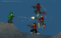
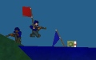
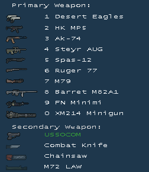

===-=-=-----
-----=-=-===

:=-==SOLDAT マニュアル (29.04.07 Japanese)==-=:
===-=-=-----
-----=-=-===
:=-==SOLDAT マニュアル (29.04.07 Japanese)==-=:
目次:
はじめに
動作環境
ストーリー
ゲームの始め方
操作方法
ゲームモード
オプション
メイン画面
武器
ボーナス
コマンド
チャット
Dedicatedサーバー
チートの予防
開発履歴
ライセンス
謝辞
連絡先
Soldatの登録 - ここを参照

:---===はじめに:
Soldatは独特なサイドビュー多人数アクションゲームです。Liero、Worms、Quake、Counter-Strikeなどのゲームを参考にして作られました。大量の飛び散る血液と肉片と共にスピード感のあるプレイが出来るでしょう。Soldierたちは様々な武器が備えられた2Dの競技場で互いに戦います。

:---===動作環境:
最小動作環境:
- PC、キーボード、マウス、脳味噌
- 333MHz以上のCPU
- Direct3D対応のビデオチップ
- DirextX8.1互換のグラフィックボード
- 32MBメモリ
- 数MBのHDの空き
- サウンドカード
- LANボードかモデム
- Microsoft Windows 98/Me/2000/XP
- Microsoft DirectX 8.1

:---===ストーリー
Quakeの形式:
数人の漢たちが殺しあうことになりました。そのうちの一人はあなたです。

シングルプレイ
一番楽な方法:
- 画面右側のMAPS(マップ)の欄を選択します。
- さらに右側にあるBOTS(BOT)の欄を選択するか、RANDOM BOTS(ランダムBOT)の欄を選択します。
- START GAME(ゲームを開始する)ボタンをクリックしてください。
マルチプレイ
他の人とプレイしたい場合はまずどうするかを決める必要があります:
a) サーバーを立ち上げ他の人からの参加を待つ
OPTIONS(オプション)メニューをクリックしてください。NETWORK(ネットワーク)の欄から接続の種類を選択します(Connection（接続環境） - LAN /Internet)。プレイヤー数の上限を設定してください(Max Players（最大プレイヤー数） - 回線速度が遅いならば少なくするべきです)。ロビーサーバに登録することもできます(REGISTER IN LOBBY SERVERS（ロビーサーバに登録）)。こうすると他のプレーヤーがJOIN GAME（他のゲームへ参加）メニューからあなたのサーバーを検索できるのです。次にゲームモードを選択します。リストからマップをいくつか選び最初の画面のSTART GAME(ゲームを開始する)をクリックしてください。ロビーサーバへの登録に成功していればゲーム中にメッセージが流れます。
b) すでにあるサーバーへ参加する
JOIN GAME（他のゲームへ参加）メニューをクリックしてください。サーバーのIPが分かっている場合はREMOTE HOST IP（ゲームサーバIP）欄に入力してください。サーバーを検索したいのであればREQUEST SERVERS（サーバリストの更新）をクリックしてください。 PINGが低く空きのあるサーバーを選びダブルクリックするか JOIN GAME（ゲームに参加）をクリックしてください。


[A] - 左移動
[D] - 右移動
[W] - ジャンプ
[S] - しゃがみ
[左クリック] - 発砲
[右クリック] - ジェット
[E] - 押して放すと手榴弾投擲（距離は押す時間に比例）
[F] - 使用中の武器を捨てる（投げる）
[X] - 伏せ
[Q] - 武器切り替え
[R] - 武器のリロード
[T] - チャット
[Tab] - 復活時間中の武器選択画面の表示/非表示の切り替え
上記の設定はPLAYER（プレイヤー）メニューから変更が可能です。
特殊技:
旗投げ - ジャンプ + しゃがみ (デフォルトはW+S)
バックフリップ - 後方へジャンプしジェットボタンを押す
[/] - コマンドの入力
[F1] - スコア画面の表示
[F2] - ミニマップの表示/非表示 / [ALT + F2] - スナイパーラインの表示/非表示
[F3] - 統計値(FPS、ping、
通信量) / [ALT + F3] - プレイヤー名の表示
[F4] - スクリーンショットの撮影(Soldat\Screensに保存)
[F5] - 音楽の停止/再生
[F6] - 前の曲
[F7] - 次の曲
[F8] - DEMOの録画/停止 / デモ再生中は高速再生
[F9] - 最小化
[F10] - ゲームの一時停止
[ALT] - + a,b,c... or
1,2,3...0 keys - 登録したコマンド、チャットの発言
[ESC] - メニュー画面の表示

:---===ゲームモード:
1. Deathmatch
 みんなで殺し合います。キル数の最も多いプレイヤーが勝利となります。
みんなで殺し合います。キル数の最も多いプレイヤーが勝利となります。
推奨の Respawn Time（復活時間）: 3-6 秒
2. Pointmatch
 Deathmatchと同じではありますがこのモードではポイントを競って争います。マップ上には黄旗があり、それを持っていると殺害することによって得られるポイントが倍になります。連続キルでも多くのポイントを得ることが出来ます。例えば2人を連続で殺すと2倍になり3人殺すと4倍のポイントが得られます。もし旗を持って6人を連続で殺すと64ポイントが手に入るのです！
Deathmatchと同じではありますがこのモードではポイントを競って争います。マップ上には黄旗があり、それを持っていると殺害することによって得られるポイントが倍になります。連続キルでも多くのポイントを得ることが出来ます。例えば2人を連続で殺すと2倍になり3人殺すと4倍のポイントが得られます。もし旗を持って6人を連続で殺すと64ポイントが手に入るのです！
推奨の Respawn Time（復活時間）: 3-6 秒
3. Rambomatch
 Rambo - 早い者勝ちルールです。マップ上にはJohn Ramboの弓があります。弓を持っているプレイヤーはものすごい力を身につけ体力が自動回復します。弓を持ったRamboのみがポイントを得られるので他のプレイヤーはRamboを殺して弓を奪いましょう。
Rambo - 早い者勝ちルールです。マップ上にはJohn Ramboの弓があります。弓を持っているプレイヤーはものすごい力を身につけ体力が自動回復します。弓を持ったRamboのみがポイントを得られるので他のプレイヤーはRamboを殺して弓を奪いましょう。
推奨の Respawn Time（復活時間）: 6-10 秒
4. Teammatch

最大4チーム(Alpha Team, Bravo Team, Charlie Team, Delta
Team)に分かれて殺し合います。もっとも高いスコア（キル数）のチームが勝利となります。
5. Capture the Flag
 2チーム(Alpha Team & Bravo Team)による競争です。スコアを得るには相手チームの旗を奪い自陣の旗に持って帰らなければなりません。
6. Infiltration
 2チーム(Alpha Team and Beta Team)に分かれます。青チームには自陣に黒旗がありこれを死守します。赤チームはこの黒旗を奪い白旗のところに持ち帰るのが目標です。(大抵は赤チームの復活地点の近く)
Realistic Modeを推奨
2チーム(Alpha Team and Beta Team)に分かれます。青チームには自陣に黒旗がありこれを死守します。赤チームはこの黒旗を奪い白旗のところに持ち帰るのが目標です。(大抵は赤チームの復活地点の近く)
Realistic Modeを推奨
7. Hold the flag
 2チーム(Alpha Team and Beta Team)が黄旗を巡って争います。旗を持っているチームには数秒ごとにポイントが入ります。
2チーム(Alpha Team and Beta Team)が黄旗を巡って争います。旗を持っているチームには数秒ごとにポイントが入ります。

:---===オプション:
OPTIONS（オプション）メニューで設定可能な項目:

- GAME（ゲーム）
Respawn Time（復活時間）:
Normal Respawn（標準で使用する時間） -
死亡後から復活までの待ち時間です。（秒単位）
Deathmatch、Pointmatch、Rambomatchで適用されます。
Maximum Time in Team Games（チームゲームで使用する時間） -
チーム戦(Teammatch, Capture the Flag, Infiltration)における復活の仕組みはWave Respawn（波状型復活）と呼ばれます。
ゲーム中にはすべてのプレイヤーに適用される復活タイマーがあります。これはゲーム中のプレイヤー数に基づく周期です。これが0になるとその前に死亡していたプレイヤーは全員復活し復活タイマーが再びセットされます。
例: 20人（各チーム10人ずつ）がいる場合、タイマーは40秒ごとに0になります。40秒毎にその時までに死亡したプレイヤーが全員復活するということです。
Maximum Time in Team
Games（チームゲームで使用する時間）はこのタイマーが長くなりすぎるのを防ぐために使用されます。あなたが設定した時間まで短くなるということです。
Bonuses（ボーナス）:
ボーナスアイテムの使用の有無を設定します。.
Frequency（出現間隔） -
ボーナスアイテムが発生する間隔です。 0 - なし 5 - 頻繁
Weapons（武器）:
武器の使用の有無を設定します。
Maximum Grenades（手榴弾の最大所持数）:
一度にもてる手榴弾の最大数です。この数だけ箱の中に手榴弾が含まれています。復活時にはこの数の半分を持っています。
Friendly Fire（味方への攻撃） -
これをチェックすると味方を殺すことができるようになります。マルチプレイで使用するのはお勧めしません。
Bullet Time（バレットタイム）
全プレイヤーが近く（1つの画面内）にいる状態でだれかが殺されると映画のスローモーション効果に使われるバレットタイムが始まります。
Mouse Sensitivity（マウス感度） -
カーソルの動きの感度の設定です。
- NETWORK（ネットワーク）
Connection（接続環境） -
マルチプレイをするときの接続の環境です。 (LAN/Internet).
Maximum Players（最大プレイヤー数） -
自分のサーバに参加できる最大の人数です。
Register in Lobby Servers（ロビーサーバに登録） -
自分のサーバがロビーサーバに登録され、他のプレイヤーがJOIN GAME（他のゲームへ参加） メニューから検索できるようになります。
Game Name（サーバ名） -
自分のサーバの名前です。サーバリストにはこの名前が表示されます。
Game Password（パスワード） -
自分のサーバのパスワードです。パスワードを知っているプレイヤーのみが参加できるようになります。
Balance Teams（バランスチーム） -
サーバに参加するプレイヤーは強制的に人数の少ないチームに参加することになります。CTFとInfiltrationのみ有効です。
- VISUALS（ヴィジュアル）
Interface Style（インターフェイス） -
ゲーム中のインターフェイスを変更することができます。Interface Style（インターフェイス） では画像、カーソル、ステータスの位置などを変更します。
Player Indicator（プレイヤーの目印） -
これにチェックがあると自プレイヤーの頭上に小さい矢印が表示されます。
Sniper Line（スナイパーライン） -
遠くへ狙いを定めるときの補助としてプレイヤーとカーソルの間に描かれる線です。
- BOTS（BOT）
Difficulty（強さ） -
BOTの射撃精度、行動に影響します。.
Chat（チャット） -
チェックがされているとBOTが時々発言するようになります。
- SOUND（サウンド）
Sound Volume（効果音の音量） -
効果音の音量（％）です。MP3ミュージックの音量にも影響します。
Music Volume（音楽の音量） -
Game Music（音楽） の音量（％）です。
Explosion Effect（爆発エフェクト） -
プレイヤーの近くで何かが爆発した時に発生する効果です。(数秒間耳が麻痺してキーンと言う音が聞こえます。)
Distant Battle（遠くの戦闘音） -
遠くの戦闘音の有効/無効を設定します。
Game Music（音楽） -
ゲーム中に再生できる標準装備の音楽です。
MP3 Music（MP3ミュージック） -
ゲーム中再生できるMP3ファイルです。Soldatでは手動もしくはWinampのようなMP3プレイヤーで作成できるM3U形式のプレイリストを使用します。SoldatのMP3フォルダ に置いてください。(例. c:\soldat\mp3).
Start Game（ゲームの開始）メニューの設定:
Kill Limit（キルリミット）, Point Limit（ポイントリミット） -
プレイヤーのキル数若しくはポイントがこの数に到達すると1マップが終わります。Teammatchにおいてはチームのポイントとなります。
Capture Limit（スコアリミット） -
Capture the Flagにおいては旗の奪取数となります。
Time Limit（制限時間） -
1マップの最大時間（分）です。
Survival Mode -
このモードでは復活がありません。プレイヤーが殺されると最後まで生き残る1人または1チームが決まるまで待たなくてはいけません。決まるとそのラウンドが終わり全員が再び復活します。
Realistic Mode -
このモードは上級者向けです。
- プレイヤーの体力の低下
- 落下によるダメージ
- 自分が向いている方向しか見えない。障害物の向こうの敵プレイヤーは見えない。
- 武器に反動がかかるようになる。発砲後カーソルが上に跳ね上がる
(これを防ぐには一発もしくは数発ずつ撃つとよい)
- ボーナスアイテムは出現しない。
Loop（ループ） -
選択したマップを繰り返します。これにチェックがない場合、選択したマップがすべて終わると自動的にゲームも終了されます。
Random Bots（ランダムBOT） -
設定した数のBOTがランダムでゲームに参加します。
チーム戦ではチーム名のとなりから設定してください。
コンフィグの設定(config.exe):
- Graphics（グラフィック）
Fullscreen（フルスクリーン） - チェックが入っているとフルスクリーンで起動します。ウィンドウモードにすることで不具合が解決することもあります。
Dithering（ディザリング） - 16bitで有効です。擬似的に32bitのように見せます。
Antialiasing（アンチエイリアス） - 画面を滑らかにします。対応するビデオカードのみ有効です。(GeForceなど)
Bitrate（ビットレート） - 32bitのほうが良いですが、すべてのカードに対応してるわけではありません。（Voodooなど）
Refresh Rate（リフレッシュレート） - 画面の更新速度です。
Video Adapters（ビデオアダプタ） - 利用可能なビデオアダプタです。
- Sound（サウンド）
Sound Quality（音質） - 音質の設定です。
Sound Output Type（音声出力タイプ） - 利用可能なサウンドデバイスです。
Sound Driver List（サウンドドライバ） - 利用可能なサウンドドライバです。
- Performance（パフォーマンス）
Particles on screen（描画の細かさ） - 血液、煙、薬莢、埃などの描画の細かさです。
Bot Seeing Quality（BOT認識精度） - BOTの視覚の精度です。ゲームの処理速度に影響します。
Render Bullet Trails（弾道の描画） - 長い弾道を描画します。
Render Weather Effects（天候エフェクトの表示） - 雪、砂、雨などを描画します。
Render Smooth Polygons（ポリゴンを補間表示する） - ポリゴンの端を滑らかに描画します。
Show Death Console（キルログの表示） - ゲーム画面右上にキルログを表示します。
File logging（ログをファイルに保存する） - ログ記録の有効/無効を切り替えます。(コンソールログ及びキルログ)
Auto record- ゲーム中の最後の数分間（soldat.iniで設定可能）自動的にゲームを録画します（demos/autodemo.sdmとして録画）。録画はF8を押すことでいつでも保存できます(別のファイルとしてdemos/autodemoX.sdmのように保存)。自動録画中にF8を二回押すと通常のDEMO録画に切り替えられます。
- Network（ネットワーク）
Game port（ポート） - 自分のサーバに他のプレイヤーが接続するポートです。
Internet connection speed（回線速度） - 自分の回線速度を設定してください。
Max Ping（最大ping） - プレイヤーに許される最大のPing値です。
Servers greetings message（入室時に表示するメッセージ） - 自分のサーバに他のプレイヤーが接続したときに表示されるメッセージです。
Never forward clients - ポートの開放されたファイアウォールがある場合これをチェックしてください。他のプレイヤーはロビーサーバを通してファイアウォールを乗り越える必要がなくなります。
Register server with All-Seeing Eye（All-Seeing Eye(ASE)へサーバ登録する） - All-Seeing Eye (http://www.udpsoft.com)のサーバに登録します。
Server Link（サーバリンク） - ロビーサーバに表示されるリンクです。サーバを立てている人のホームページかe-mailを入力すると良いでしょう。
- More（その他）
Video Compatibility（ビデオカードの互換性を重視する） - 緊急時のみ使用してください。
Force Software（ビデオカードに処理を任せずソフトフェアで処理する） - ビデオカードを使わずにゲームを起動します。
Blank Screen while bonus fix (old ATI cards)（ボーナス獲得時の黒画面をオフ（ATI cards) - Berserkerなどのアイテムを獲得したときの暗い画面を止めたい時に使用してください。
Texture Filters（テクスチャフィルタ） - 飽きたら変更してみてください。
Backbuffer Count（画面バッファ回数） - ものすごく飽きたら変更してみてください。
Languages（言語） - Change（変更） - Soldat内の言語を変更できます。(言語ファイルはSoldat\Txt\Languagesフォルダにあります)
その他の特別な設定はSOLDAT.INIで変更してください。

:---===メイン画面:
Soldatの計器表示:

- 画面下部のバーは以下のようになっています:
赤 - 体力
黄 - 弾薬数またはリロード時間
グレー - 発射間隔の時間
緑 - ジェットの量
- プレイヤーの状態 [F2で表示/非表示] は普通ジェット燃料バーの上にあります:
緑の数字: プレイヤーの順位 / 全プレイヤー数.
赤の数字: プレイヤーのキル数/ポイントとトップとの差.
青の数字: ゲーム中の得点の上限
ネットワークゲームではラグ計測器も表示されます。
- 点の大きさと色によって表されるPing値

- Teammatchにおいては右下にチームごとのスコアが表示されます。

- Capture the FlagやInfiltrationでは右下に旗の獲得数あるいはポイントが表示されます。自陣に旗がない場合は旗に×印の画像が表示されます。

武器を選択するには参加時もしくは復活時に[0-9]キーを押してください。武器を捨てたり他の武器を拾ったりすることもできます。武器は二つもてます。(片方の武器は背中に背負っています).

選択可能な武器:
1. Desert Eagles
2丁拳銃！腕を折るほどの反動がある自動拳銃です。そのため連射するのは難しいですが、その弾丸はたやすく厚い甲冑をぶち抜きます。
2. HK MP5
世界中で最も有名な短機関銃です。素早く猛烈です。至近距離では重火器をも破ることができるでしょう。
3. AK-74
1947年からの自動小銃「カラシニコフ」を改良した銃です。テロリストや多くの世界中の軍隊で使われています。過去50年間で最高のライフル銃です。
4. Steyr AUG
この武器はおもちゃのようにみえますがまったく違うものです。すさまじい弾速で素早く全てを殺す弾丸を吐き出します。
5. Spas-12
この散弾銃は12ゲージの弾丸で大虐殺を引き起こします。近距離では最高の武器です。
6. Ruger-77
猟銃です。非常に早く正確に打てます。鹿と人間の狩猟にお勧めです。
7. M79
ベトナム戦争から有名な擲弾発射筒です。べトコンはこの独特な音を聞くとたちまちに潅木へ逃げ込みました。この40mm擲弾によって丘の後ろの人でさえも粉々に砕け散ってしまいます。
8. Barret M82A1
この狙撃銃はとてつもない力を持っています。これは戦車の装甲を貫通させるために作られました。軍隊もさすがにこれを人間に使用するつもりはありませんでした。しかしそんなこと構うものでしょうか。
伏せかしゃがみの状態で狙撃モードが有効になります。
9. M249 (FN Minimi)
すばらしい火力を備えた最高の機関銃です。チームの支援に非常に有効でしょう。
10. XM214 Minigun
映画プレデターで有名な「無痛銃」です。このバルカン砲は軍用ヘリに搭載されています。この銃には莫大な量の弾薬があり、またその莫大な量の敵兵を殺害することができるでしょう。
標準装備の武器:
USSOCOM
アメリカ特殊部隊で標準的な武器です。復活後は常にサブ武器として装備できます。
Combat Knife
標準的な歩兵用の戦闘ナイフです。この小さな武器の一突きでたちまち敵を仕留めてしまいます。秘密工作に最適です
武器投げボタンを押すことにより飛び道具としても使用可能です。
Chainsaw
大量の木を切るのに使われるチェーンソーです。違う使い方を見つけたらみんなに知らせてあげてください。
M72 LAW
爆発するミサイルを搭載した対戦車用武器です。しゃがみの体制でのみ使えます。
Fists（こぶし）
武器を捨てるとロッキーを演じることができます。
Grenade(手榴弾)
すぐに殺すことはできませんがダメージを与え一度に多くの敵を殺すのに有効です。
スタート時と緑色の箱を拾ったときに手榴弾を得ることが出来ます。
特殊武器:
Rambo Bow（ランボーの弓）
Rambomatchで使用可能な有名なJohn Ramboの弓です。隠密作戦に最適です。静かに稲妻のように素早く死をもたらします。武器切り替えキーで爆発する弓に変更することもできます。
Flamethrower（火炎放射器）
他のプレイヤーに火をつけるのに使われます。Flame Godのボーナスアイテムをとった時のみ使用可能です。
武器の設定はweapons.iniを編集することで変更可能です。

時々発生するいくつかのボーナスを拾うことが出来ます:
 Medikit（医療箱）
Medikit（医療箱）
体力を最大値まで回復します。
 Grenades（手榴弾）
Grenades（手榴弾）
設定した最大値(1-5)まで手榴弾を手に入れることができます。
Cluster grenades（手榴弾パック）
地面にぶつかると分裂する3つの手榴弾です。投げた後は破壊的な爆発を引き起こします。
 Bulletproof vest（防弾チョッキ）
Bulletproof vest（防弾チョッキ）
簡単になくなってしまいますがプレイヤーの命を救うでしょう。
Flame God（炎の神）
持続時間: 10 秒
不死身の火の神になります！敵を焼き尽くす火炎放射器が手に入ります。好きなだけ燃やして逃げ惑う敵を笑ってください。
Berserker（狂戦士化）
持続時間: 15 秒
この一言です: 皆殺し! Berserkerモードでは4倍の攻撃力となります。敵をほんの2,3発で粉砕してください！
 Predator（透明化）
Predator（透明化）
持続時間: 25 seconds
孤独な狩人となってください！Predatorモードでは他人から見えなくなります。また、だれにもその銃声は聞こえなくなりますが、ジェットを使いすぎたり発砲しすぎたりするとただの幽霊となってしまい簡単に倒されてしまうでしょう！怪我をしていると敵に血が見えてしまうことも覚えて置いてください。さあCTFで敵の旗を盗んでみましょう！

:---===コマンド:
"/"キーを押した後に以下のコマンドを入力できます:
|
プレイヤー用コマンド: |
|
| KILL | 切腹 |
| BRUTALKILL | 華麗な切腹 |
| SMOKE | 葉巻に火をつけ吸った後捨てる |
| TABAC | 煙草をかむ |
| TAKEOFF | 帽子を脱ぐ |
| VICTORY | 歓声をあげる |
| PAUSE | ゲームの一時停止 |
| サーバ用コマンド: | |
| ADDBOT bot name | BOTの追加 |
| KICK player name or player number | プレイヤー/BOTをゲームから追い出す |
| BAN player name or player number | プレイヤーの接続を禁止して二度と参加できなくする |
| BANIP ip number | ip numberからの接続の禁止 |
| UNBAN ip number | ip numberのBAN状態の解除 |
| MAP map name | マップの変更 |
| RESTART | 現在のゲームの再スタート |
| NEXTMAP | 次のマップへの変更 |
| ADM players name | プレイヤーをRemote Admins listに追加 |
| ADMIP IP number | IP numberをRemote Admins listに追加 |
| UNADM IP number | IP numberをRemote Admins listから除外 |
| KICKLAST | 最後にゲームに参加したプレイヤーを追い出す |
| RESPAWNTIME seconds | respawn time（復活時間）の変更 |
| MAXRESPAWNTIME seconds | maximum respawn time（チーム戦における復活時間）の変更 |
| LIMIT number | kill/point/capture limit（キル/ポイント/スコアリミット）の変更 |
| TIMELIMIT minutes | time limit（制限時間）の変更 |
| PASSWORD text | パスワードの変更(一時的) |
| SETTEAMx player number | xチームにプレイヤーを移動 |
| ADDBOTx bots name | xチームにBOTを追加 |
| FRIENDLYFIRE 0/1 | friendly fire（味方への攻撃）の有効/無効 |
| VOTE% 0-100 | 投票有効率の変更 |
| BONUS 0-5 | bonuses frequency（ボーナス出現間隔）の変更 0-なし, 5-頻繁 |
| MAXPLAYERS 1-32 | サーバに接続できる最大人数の設定 |
| LOADCON | soldat.iniのサーバ設定の読み込み |
| LOADLIST xxx | xxx.txtからマップリストを読み込む |
| LOADWEP xxx | xxx.iniから武器設定を読み込む |
| GAMEMODE 0-6 | ゲームモードの変更(0 DM, 1 PM, 2 TM, 3 CTF, 4 RM, 5 INF, 6 HTF) |
| REALISTIC 0/1 | realistic modeへの切り替え |
| ADVANCE 0/1 | advance modeへの切り替え |
| SURVIVAL 0/1 | survival modeへの切り替え |
| KILL players name or players number | プレイヤーの殺害 |
| BANLAST | /kicklastと同じように最後にゲームに参加したプレイヤーからの接続を1時間禁止する |
| UNBANLAST | 最後に接続を禁止されたプレイヤーのBAN状態を解除する |
| LOBBY | ロビーサーバへの登録 |
| SAY text | サーバ上の全プレイヤーへのメッセージの送信 |
|
プレイヤーのサーバ用コマンド: |
|
| ADMINLOG password | サーバの管理者として接続する |
| INFO | サーバ情報の受信 |
| MUTE players name or players number | 特定のプレイヤーの発言を見えなくする |
| UNMUTE players name or players number | mute状態を解除する |
| RECORD name | Soldat\Demosフォルダに保存されるデモの録画 |
| STOP | 録画の停止 |
パラメーター用コマンド:
以下はSoldat.exeを実行する際に使用できます:
- Soldat.exe -dedicated (dedicatedサーバとして起動)
- Soldat.exe -start (メニューを表示させずすぐにゲームを起動)
- Soldat.exe -dedicated -start (すぐにdedicatedサーバとして起動)
- Soldat.exe -join IPnumber (port password)
(ゲームを起動し入力した
IPアドレスへ接続、ポート、パスワードは任意;
例:
Soldat.exe -join 62.93.201.70
Soldat.exe -join 127.0.0.1 23073 tikikaka)
- Soldat.exe -demo name (freecam speed notexts
extract)
(ゲームを起動し指定したDEMOを再生、以下は任意:
freecam (0/1) - 自由に視点を移動できる (デフォルトは0)
speed (0-...%)- 再生する速度(デフォルトは100%)
notexts (0/1) - テキスト、メニュー、カーソルを再生中は表示しない(デフォルトは0)
extract (0/1) - DEMOからBMPファイルを作成 (デフォルト0)。 "Bmp2Avi"などのソフトを使って後でAVIファイルを作成するときに有効。
音は"Total Recorder"などのソフトを利用すると抽出可能。このオプションは時間がかかり処理が非常に遅くなるためお勧めしない。再生速度を低くする(50%など)と良い結果になる。
例:
Soldat.exe -demo demo12
Soldat.exe -demo demo19 1 200 1 0
)
- Soldat.exe -mod xxx (Soldat\Mods\xxxにあるMODでSoldatを起動)

:---===チャット:
チャット機能を利用するためのデフォルトキーはT (チームチャットはY)で、入力後ENTERを押すと発言できます。
Taunts - TAUNTS.TXT(SoldatフォルダもしくはProfilesフォルダに置かれます)で設定した文を ALT+アルファベット・数字キーを押すことですぐに発言することが出来ます 。
Teamchat - チーム内だけに発言したい場合は"^"を文の前に入力します。例: ^Whats up!

dedicatedサーバはプレイヤーとして参加せず専用の快適なSoldatサーバを建てるときに使います。
これには二つの方法があります:
1. SOLDAT.INIからNETWORKの欄のDedicated=0を探しDedicated=1に変更してください。
2. -dedicated (Soldat.exe -dedicated)パラメーターで起動してください。スタートメニューのショートカットを使うことも出来ます。
自動的にサーバを起動するには以下のようにしてください:
- Soldatを普通に起動しメニューからオプション(ゲームモード、制限時間、マップリストなど)を設定します。
- 終了すると設定が保存されます。
- -dedicated -startパラメータを使ってSoldatを起動してください。
Remote管理
プレイヤーがサーバ外から操作できるようになります。このためにはプレイヤーをRemote Admins listに追加してください。
このコマンドは以下で説明しています
コマンド.
ポート
重要! - ファイアウォールがある場合はUDPのポート（デフォルトは23073、変更可)を開放しなければいけません。あなたのサーバに接続するプレイヤーはデフォルトで23083を使用します。(変更不可)
ポートを開かないでも接続できるようになるオプションもありますがロビーサーバを通さない場合は出来ません。
Soldatサーバは以下のポートを開放する必要があります:
UDP: ゲームポート (デフォルト 23073)
TCP/IP: 管理ポート = ゲームポート (デフォルト 23073)
TCP/IP: ファイルポート = ゲームポート + 10 (デフォルト 23083)

Soldatのチート対策は以下の要素に基づいています
ソフトウェア会社の手掛けるマルチプレイヤーゲームには何十万ドル、何百時間という膨大な量をつぎ込んでおり、何千人という人が完璧なチート対策システムを開発するために無駄な労力を使っています。このようなシステムはあるちょっとしたことを忘れているため意味がありません。Soldatの作者は4秒でアイデアを思いつきました。Sierraや他のオンライン業界の大手企業はそのことを思いつかず苦労しています。そのSoldatにおけるチート対策は簡単なものです :
I.
要望: "Soldatでチートはしないでください".
どういうわけか効き目がないなら以下の文を読んでください:
II.
このSoldatのチート対策によりSoldatの起動中はこのようなハッキングツールが使用できません: メモリビューア、トレーナー、パケットエディタ、バイナリエディタ、ディスアセンブラ。Soldatの起動中は他のプログラムをすべて終了させることを強く推奨します。ハックツールの使用もSoldatをプレイできないほどのレベルまで動作を悪化させてしまいます。
実行ファイルもしくはその関連のファイルを編集してシェアウェア保護を破壊する行為はシステムの不安定化及びネットワークの問題を引き起こします。
万が一なにも違法なことをしていないのにこのようなことが発生してしまったら作者に連絡してください。
Soldatはある一人の男が作った小さなシェアウェアであるということを忘れないでください。このゲームの保護を破壊しようとすれば自分が苦しむことになるでしょう。お金も得られないのにチート対策システムの開発に負担がかかりすぎていたら、私はいつでもこのゲームの開発をやめることができるのです。チートやらなんやらがしたいならEAGamesのようなチート対策で名声を獲得している大きい会社を狙ったほうが自分がすごいということをしらしめることができるでしょう。Soldatは放っておいてください。

:---===開発履歴:
Current version:
1.4 (14.02.2007)
Previous public versions:
1.3.1 (09.12.2005)
- Added join spectator team button in team select menu
- Added new maps: DesertWind, htf_Rubik, ctf_Maya2, ctf_Lanubya (winner of ESL mapping contest) (by grand_diablo),
Blox, ctf_Snakebite, ctf_Ash (by chakapoko maker), htf_Dusk (by Michal), htf_Muygen (by The Geologist),
remakes: ctf_Death2 (by grand_diablo, NuZZ and MM), ctf_Dropdown2 (by Boxo, wp's by Keron Cyst)
- Added new secret ownage command
- Added file readonly.txt to prevent downloading certain files (original maps and sceneries cannot be downloaded)
- Added new anti-cheat solutions
- Added new command: /loadlist X (loads maplist from file X.txt);
- Added new command: /lobby (reregisters the server in the lobby server)
- Added log files split after reaching 512KB of size
- Added png and jpg files are supported by the file download system
- Modified default gostek graphics changed to EVO Gostek (by Michal)
- Modified fixes in maps: ctf_Equinox, ctf_Voland, ctf_B2b + all maps recompiled with PolyWorks
- Modified weapon balance (check weapons.ini for details)
- Modified all maps can be changed or voted in the in-game map change menu
- Modified all weapons must be reloaded after pick-up (prevents reload exploits)
- Modified can't vote until 2 minutes pass after server join
- Modified grenades don't explode on corpses (prevents lag bugs)
- Modified if texture can't be downloaded for map default one is loaded
- Modified all weapons bullets (except Barret, M79 and LAW) lose power
after long distance (1 or more screens, to prevent blind spraying)
- Modified weapon can't be reloaded if is fully loaded
- Modified Barret has more movement speed aim penalty and has short wait time before firing
- Modified M79 gives 30% more self damage
- Modified knife throwing - speed of knife depends on how long you hold the throw button
- Fixed extreme bink on respawn
- Fixed lobby registering errors in non-dedicated server game
- Fixed yellow player name still after thrown away flag
- Fixed flame whizz sound
- Fixed players using the same file for headgear
- Fixed Spas-12 reload exploit
- Fixed grenade not exploding in close hit
- Fixed invisible LAW bug
- Fixed Soldat not compatible with some background programs
- Fixed blue team caps worth 20 instead of 25 points
- Fixed mp5 clip falling out
- Fixed killing through wall
- Fixed flames hit colliders
- Fixed various game and manual typing mistakes
- Fixed when player joined paused game his game wasn't paused
- Fixed server does not send messages to non-authenticated admin clients
- Fixed two grenades being thrown on server when player had a chainsaw
- Fixed autorecording start on map change
1.3 (05.08.2005)
- Added new gamemode: Hold the Flag
- Added new maps: htf_Mare (by Demonic/Legend), Daybreak, inf_Moonshine (by chakapoko maker), htf_Void (by MM),
ctf_Nuubia (by Troskal) htf_Boxed, htf_Futura, htf_Nuclear (by grand_diablo), htf_Arch (by Sticky)
htf_Desert (by DeMonIc), Airpirates (by Ville)
- Added possibility to throw away flag (press jump + crouch buttons at once, default W + S)
- Added dodge move - pressing the jets button while jumping backwards makes the player do a back-flip
- Added flames from flamer stick to victim and make him die slowly in pain, flames can stick to other people
- Added team player names appear on screen borders (F2 key turns this on/off)
- Added bullet statistics after kill (distance of shot, airtime and number of ricochets)
- Added add, delete to favourite servers list buttons. List holds now server names, IPs, ports and passwords.
- Added reason and voter displayed on map or kick vote
- Added when playing on a weapons mod server all weapon statistics are shown in weapons menu
- Added when selecting weapons little help messages appear (for new players, dissappears after few runs of game)
- Added autocomplete button (Tab), when you type the beginning of someones name and hit Tab it will auto complete
- Added more chat text can be typed and shown (long texts are scaled so they fit screen)
- Added spectator can use free cam by pressing jump button (default W button)
- Added names appear next to players when in spectator mode
- Added menu option to specify amount of kills/deaths to win/lose weapon in advance mode
- Added selection of No weapon for secondary
- Added penalty time in Infiltration and HTF when teams are uneven
(points are added every 5 seconds + 2 seconds for every uneven team member)
- Added penalty for capture points in Infiltration when teams are uneven
(30 points for capture - 5 points for every red team member more)
- Added full weapons modifications (edited in a file 'weapons.ini'),
servers with weapons mods have a prefix '(WM)' in their name
- Added Infiltration and HTF options in soldat.ini -
Blue_Points_Time (time for blue team to get point in seconds); Red_Points_Capture (amount of points for capture);
HTF_Points_Time (time to get point in seconds)
- Added soldat.ini options Max_Flood_Warnings, Max_Ping_Warnings, (warnings until kick),
MaxConnections (max file server connections, tweak this if server crashes on map download)
Disable_AntiCheat_Kick (basicly disables anti-cheat), TooMuch_Packets_*, Flooding_Packets_*
(specifies amount of packets from client when flooding occurs)
- Added soldat.ini options for setting packet send rate T1_*, works when connection type is set to T1 (Internet_Connection=3)
example: T1_Snapshot=40, sends this packet every 40 ticks (60 ticks = 1 second).
- Added KillConsole_Length and MainConsoleLength value to soldat.ini
- Added running Soldat mods through "-mod" parameter ex. "Soldat.exe
-mod HarryPotter" - loads all graphics, sounds and txt files
from folders in Soldat\Mods\HarryPotter
- Added file "Soldat\Txt\font.ini", allows to change in-game font (useful for mods and translations)
- Added flame animations are now in different files than explosion (for mod-makers)
- Added files "m2-2.bmp" and "bow-2.bmp" so these weapons don't have to be symmetrical (for mod-makers)
- Added client command "/info" - displays info from server about address, timelimit, nextmap etc.
- Added command "/loadwep" for reloading 'weapons.ini', useful for tweaking settings
- Added /loadwep command works with other files eg. /loadwep weapons121 (loads weapons121.ini settings)
- Added command "/loadcon" for reloading the config file (soldat.ini) while in-game, useful for tweaking network settings
- Added command "/gamemode X" for changing gamemodes (X = 0 DM, 1 PM, 2 TM, 3 CTF, 4 RM, 5 INF, 6, HTF)
- Added commands: "/advance 0-1", "/realistic 0-1", "/survival 0-1", for changing server game settings (eg. /realistic 1)
- Added command "/unbanlast" unbans last vote/server/admin ban
- Added command "/banlast" (similar to /kicklast, bans the last person that entered the server, ban works for 1 hour)
- Added command "/kill X" (X can be player's number or name) (of course this is an admin command)
- Added packet send rate adjusting depending on number of players (smoother play with few players, less bandwidth cost for lots
of players, can be turned off in soldat.ini 'PacketRate_Adjusting=0')
- Added working pause for server and players
- Added if player which is being voted on leaves the game then he gets temporarily banned
- Added different files of gostek for second team (for mods, possibility of two different looking teams)
- Added different files for weapon muzzle fires (for mods)
- Added F8 button for fast forwarding demo playing
- Added new anti-cheat detection methods
- Added self-bink on auto weapons - gun becomes innacurate while auto-firing
- Modified all weapons rebalanced
- Modified weapons: shotgun has more kickback, less horizontal boost for minigun
- Modified LAW has startup time, hold fire for about 0.3 seconds to fire
- Modified bodies preserve velocity after death
- Modified survival mode round ends when everybody on team is killed in CTF and capture point is added for winners
- Modified in survival mode all players and flags respawn after round end
- Modified player joining a survival mode game is dead until end of round
- Modified flame god mode time is shorter (10 seconds) and works on all gamemodes
- Modified flamer is not lost after flame god mode, can be thrown away after but dissapears
- Modified increased radius of pick up (flags, boxes, weapons) slightly
- Modified cursor gets bigger when bink effect occurs (eg. when hit by bullet holding Barret)
- Modified when calling a vote you need to type the reason for the vote
- Modified can't call a vote for 2 minutes after previous vote
- Modified chat taunts are automaticly sent after pressing Alt+key,
after pressing the chat button they can be selected the old way
- Modified mp3 music volume is independent from sound volume (Music volume option works for mp3)
- Modified console is more transparent when weapons and team menu show up
- Modified disabled "/adminpass" command in dedicated server, for security reasons
- Modified "mapslist.txt" is reloaded every map change
- Modified flags are dropped not respawned after player disconnect
- Modified ricochet angle is slightly larger
- Modified rambomatch: players can't kill each other if someone is rambo
- Modified bullet hit damage ratio for head, 5% less damage (current ratios: legs 90%, torso 100%, head 115%)
- Modified network bullet start position according to player ping and bullet owners ping
- Modified spectator cam is faster
- Modified flood kick ban is 20 minutes now
- Modified capture points for player = 20 points
- Modified game admins cannot be kicked
- Modified server is automaticly unpaused if all players disconnect
- Modified idle kick time lowered to 3 minutes
- Modified "/setteam5" works on all game modes
- Modified automatic ping sort works only after whole list is downloaded or cancel pressed
- Modifed or fixed maps Arena2, ctf_B2b, ctf_Viet
- Fixed grenade selfkilling
- Fixed chainsaw collision so it is possible to massacre bodies
- Fixed not being able to chat on map change
- Fixed time does not flow if game is paused
- Fixed mp3 playing when list loops
- Fixed Advance mode cheat allowing to pick a disabled weapon with the keyboard
- Fixed server host bullet hit boost effect
- Fixed LAW exploit (dropped LAW must be reloaded)
- Fixed alt+F4 doesn't make a screenshot
- Fixed server-client time synchronization
- Fixed friendly fire for clients (team players don't bleed if it is off)
- Fixed if holding two weapons of the same kind - losing both when throwing one away
- Fixed bug when dead guys bullet didn't do any damage
- Fixed kills console fades when showing players menu
- Fixed M79 wall bug
- Fixed fast shot piercing wall bug
- Fixed causes of weapon jamming after reload
- Fixed causes of mute bug
- Fixed causes of invisible bullets in multiplayer
- Fixed wave respawn in dedicated server (if there are few players it takes less seconds to respawn)
- Fixed "biodro.bmp", "biodro2.bmp" and "reka.bmp"
- Fixed player does not join same team if chosen from change team menu (can be used for canceling the menu)
- Fixed paused server can be joined
- Fixed modified animations bug
- Fixed no respawn time showing after changing team from spectator
- Fixed changing video mode when joining server with wrong password
- Fixed soldat.ini value "Record_Time=", time in minutes of the autodemo rerecording
- Fixed all filelogs are now updated every minute only (can be specified in soldat.ini "LogFilesUpdate=")
- Fixed realistic mode visibility point, so players with head in ceiling are visible
1.2.1 (26.10.2004)
Added Auto map downloading from server
Added Bullet and missile ricochets
Added New Advance Mode
Added Bullet time effect
Added Auto recording feature
Added Mute player option (commands: /mute, /unmute)
Added Option to take screenshot on final score
Added Bots aim better with Barret and Ruger on Impossible level
Added Weapons aim is affected by bullet hits (the bink effect)
Added Aim is affected more by player speed
Added In CTF health and grenade boxes spawn on players team side, player can pick up enemy boxes and "steal" them on his side
Added Players get kicked from server after 5 minute idle time
Added Console messages are transparent after pressing F1
Added Option to disable sniper line server-side in soldat.ini
Added New map anti-hack system
Added New voting system with menu for selecting "yes" or "no"
Added Server makes an automatic kick vote if cheating is detected to prevent unfortunate bans
Added Weapon muzzle collision detection with polygons and colliders to prevent hidden camping
Added Grenade and medikit boxes can be hit by bullets on LAN
Added Parachute drops off after pressing jets button
Added /maxplayers to commands list in manual
Added New buttons for mp3 playing: F6 - Previous song; F7 - Next Song
Added New DM maps: remake of old HH, Bigfalls, Tropiccave
Added New CTF maps: ctf_Chernobyl, ctf_Crashed, ctf_Dropdown, ctf_Equinox, ctf_Maya
Added New INF map: inf_Invasion
Modified Mp3's are now played only through .m3u lists (put them in the \Mp3 folder)
Modified Minigun has less bullet spray
Modified Ak-74 has slightly more power
Modified Cursor is 2 times smaller with sniper line
Modified Kill console is longer
Modified Death ambient sound
Modified Guns stay 5 seconds longer
Modified Maps: ctf_B2b, ctf_Voland, Arena2 and other minor map changes
Modified No limit for unregistered version demo recordings
Modified More recoil in realistic mode for Ruger 77
Modified Survival mode enabled in Pointmatch and CTF
Modified Servers list sorts by ping after request
Modified Health and grenade box don't spawn at the same place after picking up
Modified Explosions have less impact on flags
Fixed Double shooting law exploit
Fixed Server filter options not saved
Fixed Flag collisions with map and player
Fixed Mp3 playing during intro
Fixed Spectators being kicked for cheating
Fixed Soldat window showing on the center of desktop instead of screen (for multi-monitor systems)
Fixed Space button could not be assigned to keys
Fixed Soldier shivering on horizontal polygons
1.2.0 (21.01.2004)
- Added demo recording (F8 key)
- Added new gameplay intro
- Added smooth polygon edges
- Added spectator mode
- Added player jet flames color can be changed for registered players
- Added registered players will have a star next to their name on the players
list
- Added fast bullets pierce soldiers body
- Added close and fast bullet shots are more brutal
- Added grenades, M79 bullets and LAW missiles explode from each other
- Added remakes of old maps: Arena3 and ctf_Death
- Added smoke after explosion
- Added new explosion effects
- Added small effect on flag capture
- Added new secret animation
- Added sound when time appears in console
- Added stationary gun use sound
- Added every weapon has different bullet and shell graphics
- Added total game texts localisation, localised files placed in
Soldat\Txt\Languages
- Added in-game statistics in Logs\GameStat.txt (updated every 30 seconds)
- Added log.txt and consolelog.txt saved in Logs directory with numbers (for
dedicated server)
- Added custom profile taunts saved in Soldat\Profiles
- Added players number display in non-team games in players list
- Added network compression (if causes lag on slower machines can be disabled in
Soldat.ini)
- Added network code optimisation (less server bandwidth)
- Added LAW and M79 grenade explode if hit player but lag does not show it
- Added more anti-cheat solutions
- Added remote admins can always join server even if full
- Added spectator can switch to the previous player with jets button (default:
right mouse click)
- Added game can be joined from parameter with password ex. Soldat.exe 127.0.0.1
23073 password
- Added server joining through URL address ex. type in browser
soldat://127.0.0.1:23073/
- Added protection against invalid characters in name (only keyboard chars
allowed)
- Added names cannot be empty or have spaces in the end
- Added two players can't have the same name (player name changes by server)
- Added double pressing the command key '/' enters the last typed command
- Added pressing the command key '/' displays corresponding player numbers in
players menu (F1)
- Added /Kick and /Ban commands can work with player numbers or names now ex.
/Kick 2 or /Kick Loser
- Added new server commands:
/addbot1 [name], /addbot2, /addbot3, /addbot4 - for adding team bots
/setteam1 [number], setteam2, setteam3, setteam4 - forces the player to join
team
/kicklast - kicks the player that last joined the server
/respawntime [seconds] - changes the respawn time
/maxrespawntime [seconds] - changes the maximum respawn time in team games
/limit [number] - changes the current game limit (kills/points/captures)
/timelimit [minutes] - changes the current time limit
/bonus [number] - changes the frequency of bonuses
/friendlyfire [0/1] - changes friendly fire settings
/vote% [0-100] - changes the percentage of players needed to vote on a map or
kick
/password [word] - changes temporarily the server password
/adminpass [word] - changes the remote admin password
/adminlog [password] - for client, logs in as a remote admin on the server using
password
- Fixed player-map collision, no more sliding, less polygon holes
- Fixed flag collision bugs
- Fixed player can't move with no weapon if prone
- Fixed idle animations not to interrupt firing
- Fixed various map polygon bugs
- Fixed some joining server issues
- Fixed pick-up medikit health lag on client
- Fixed LAW not disappearing bug
- Fixed pinging servers with the same IP
- Fixed "lobby forward" join and ping issues
- Fixed flag appearing in wrong places on client
- Fixed player getting kicked if didn't choose weapon and USSOCOM was disabled
- Fixed two bows bug when one bow was knocked out
- Fixed warp effect on client if player stood still and was shot
- Fixed chat messages are now guaranteed to arrive on server
- Fixed profile settings not working
- Fixed link on profile selection screen
- Fixed "List out of bounds" error if profile was deleted and used
- Fixed game not saving some settings when started with "-start" parameter
- Fixed Spas-12 reload issues
- Fixed soldier doesn't play grenade animations or sounds if can't throw grenade
- Fixed reload sound stops if player dies, throws out or changes weapon
- Fixed player could not get up with default key if reloading
- Fixed gun jammed when fired quickly after weapon change
- Fixed player couldn't lose weapon if crouching or prone and other no weapon
issues
- Fixed double Spas-12 reload sound
- Fixed Spas-12 shooting at self sometimes on client
- Fixed M79 throwing out tons of shells bug
- Fixed player can roll now when reloading
- Fixed player could not get up if had no weapon
- Fixed jumping backwards
- Fixed player fired after clicking vote map or kick
- Fixed weapons being more accurate when shot down-right or up-left
- Fixed stationary gun flying bug
- Fixed player losing weapon if picked up gun while changing weapons
- Fixed weapon created with no force applied on client
- Fixed time display in players menu
- Fixed spawn effect team color
- Fixed wrong message displayed on top of players list if there was a tie in
team games
- Fixed clanmatch option
- Fixed player death animaton issues on client
- Fixed player could not play idle animations if had no weapon
- Fixed cursor player info not showing if team player was not standing or dead
- Fixed player not disconnected if pressed Alt+F4
- Fixed window not restoring properly after Alt+Tab or minimize
- Fixed display of names containing character '|' in dedicated server panel
- Modified functional keys: F4 - screenshot, F8 - record demo, F9 - minimize,
F10 - pause
- Modified player gets point for killing Rambo, player loses point if kills
non-Rambo
- Modified realistic mode field of view, you can not see what is behind you now
- Modified realistic mode fall damage (only falling hurts, doesn't kill
instantly)
- Modified range of Barret scope increases slowly
- Modified stationary gun layout on ctf_Kampf
- Modified jet fuel regenerates 2 times faster when on ground
- Modified stationary gun overheats after time and is less accurate after while
of firing
- Modified LAW can be fired while prone
- Modified can use jet boots while rolling
- Modified flamer does not kill owner
- Modified flamer has longer distance
- Modified physics - player speed affects bullets speed
- Modified physics - player speed is not limited (1.0xb M79 tricks possible)
- Modified bullets have more power impact on bodies (head shots are more
spectacular)
- Modified hit point power ratio:
head shot was: 110% is: 120%
torso shot is: 100%
leg shot was: 80% is: 90%
- Modified weapons stats:
Auto weapons: power increased slightly
FN Minimi: reload time decreased
M79: speed increased by 5%
LAW: shorter reload time, can be fired only from full crouch or prone, 1 second
delay on start
Chainsaw: is stronger and has less ammo
- Modified respawn time in team games can't be less than 2 seconds to prevent
immediate respawn
- Modified multi kill messages
- Modified big kill text ('killed by ...') can't be very large
- Modified cursor does not center on respawn
- Modified player name can hold 4 more characters
- Modified background colors on most of the maps
- Modified M79 bullet is more visible
- Modified bigger, more brutal blood
- Modified join and leave player messages are now team color coded
- Modified chat message color
- Modified maximum chat message letters
- Modified stereo sound listener is now on player (you hear what your player
hears, like you would be him)
- Modified vote map and vote kick rules (default 33%+1 players needed to vote on
something)
- Modified team respawn counter sets smaller seconds values
- Modified remote admins cannot be banned
- Modified can play now with modified animations over network
- Modified file logging is disabled by default because of performance issues
- Modified log files - new format, unified date and time
- Modified Terminator bot updated with new Terminator 3 quotes!
plus Soldat 1.1.5 fix:
- Fixed 2 flags bug
- Fixed bullets and explosions crazy multiplying on lag
- Fixed weapon lose bug
- Fixed weapon selection with keyboard if weapons disabled
- Fixed client kill log file issues
- Fixed players wrong respawn after map change
- Fixed stationary gun bullet trail
- Modified stationary gun bullet explode sound
- Modified weapon graphics size restrictions
1.1.5 (13.07.2003)
- Added stationary gun (M2 machine gun on some maps)
- Added maps: Krab and ctf_Kampf (old version remake)
- Added new lethal knife throw
- Added option to disable USSOCOM, Knife, Chainsaw or LAW
- Added LAN servers search option
- Added "Never forward through lobby" for server option in setup
- Added flames from flame bow
- Added "Sniper Line" option (line between player and cursor)
- Added option to easily add admins in dedicated server
- Added server is now protected from "connect" flooding
- Added protection against weapon graphics cheat
- Added protection against animation, objects cheat
- Fixed various map bugs
- Fixed weapon losing bugs
- Fixed flag missing bug when player out of map bounds
- Fixed secondary weapon cheat
- Fixed map maker cheat
- Fixed modem jet cheat
- Fixed missing and modified map scenery bug
- Fixed weapons menu not showing when all primary weapons disabled
- Fixed kills count display on right
- Fixed bot problems when secondary weapons disabled
- Modifed weapons menu button locks the menu
- Modifed LAW reload is slightly faster
- Modified chainsaw now has reload time and is weaker
- Modifed jetpack can be used when crouched, prone and parachute on
- Modifed LAW missile smoke slightly
- Modified options layout
- Improved some map visuals and spawn points
1.1.4
(13.06.2003)
- Added new anti-lag system
- Added parachutes (when respawn is high)
- Added new maps: ctf_Voland, inf_Fortress
- Added new interface: Storm
- Added time and number of players displayed in players menu
- Added new secret player animation
- Added player raises weapon above teammate when crouching
- Added modifiable weapon names in 'txt\weaponnames.txt'
- Added option to choose secondary weapon
- Added new secondary weapon: Combat Knife
- Added new secondary weapon: Chainsaw
- Added new secondary weapon: M72 LAW
- Added /kill and /brutalkill commands for client
- Added flames effect when scored in Infiltration
- Added buttstock hit in close combat
- Added "points to leader" displayed in players status
- Added button (default Tab) to open/close weapons menu while dead
- Added server web page link or admins e-mail displayed in servers lobby page
- Added possibility to go prone when running fast or off ground (stunts)
- Added clients can join servers behind firewall forwarded through lobby
- Added servers list displays server system (Linux or Windows)
- Added flag capture info in console
- Fixed "no flag" not displayed in Infiltration
- Fixed some wrong map version
- Fixed banned for cheating issues
- Fixed wrong spawning when out of map bounds
- Fixed rolling with fists
- Fixed flames from flamer not showing on client
- Fixed flamer bonus cheat
- Fixed "scenery modified" bug when file not present
- Fixed team chat button disabled in non-team games
- Fixed flag stays with player when changing teams
- Fixed bullets and grenades duplicating on client
- Fixed jet fuel bug on map change
- Fixed Spas-12 could not be fired while reloading
- Fixed "Time left" in console minutes count
- Fixed "2 minutes" warning freeze
- Improved network gameplay
- Improved visuals and playability on some maps
- Changed Ruger 77 is now faster
- Changed long fall kills in realistic mode
- Changed map voting starts when first map vote starts
- Changed console text timings and length
- Changed points and team score doesn't decrease from self kills
- Changed and fixed flag capture messages
1.1.3 (07.03.2003)
- Fixed spawn point bugs
- Fixed sliding when lying down
- Fixed Spas-12 pellets duplicating on network game
- Fixed desert eagles shooting one bullet on network
- Fixed Infiltration points counting when paused
- Fixed mp3 player next function
- Fixed non-passworded servers checking for password
- Fixed server settings applying on clients
- Fixed some connection problem issues
- Fixed in realistic mode carried flag visible if player isn't
- Fixed dying being too brutal sometimes in network game
- Fixed polygon sinking bug
- Fixed certain scenery element acting as liana in new maps
- Fixed weapon firing dummy bullet when grenade thrown on clients
- Fixed bad fire animation, sound coordination with bullet in network
- Fixed "invalid filename" error coming up when deleted interface
- Fixed USSOCOM firing on network
- Fixed config file loosing settings problem
- Fixed some certain map problems
- Added deaths counter in players score list
- Added punching someone knocks out his weapon
- Added message shown when lobby server is not responding
- Added game menu click sound
- Added grenade trail drawing
- Added bot with favourite weapon = Hands uses only fists
- Added little dust on bullet ground hit spot
- Added ALT+X can be used with binded taunts
- Added Team Chat button (default Y)
- Changed ping kick not to be so restrictive
- Changed player hit spots are more important (especially in Realistic Mode)
- Changed player can walk on some big slopes
- Changed kill message colors
1.1.2 (10.02.2003)
- Fixed connecting problems - "free cam bug"
- Fixed prone get up, get down bug in network games
- Fixed roof respawn and collision bug on some maps
- Fixed game menu displaying
- Fixed sliding when prone in some situations
- Added team auto balance option in CTF & Infiltration
- Added version number to ASE rules
- Added information in console about Survival or Realistic mode
- Changed Rambo bow respawn on Bridge map
- Changed team game servers show max. respawn time on servers lists
1.1.1
(05.02.2003)
- Fixed spawning on top of maps
- Fixed clients crash when host changes team
- Fixed connection problems on map change and voting
- Fixed some Anti-Cheat problems
- Fixed some conflicts with background programs
- Fixed some map and collision bugs
- Fixed spawn on death place bug
- Fixed some file access errors
- Fixed ASE showing bad respawn time
- Fixed Soldat removing from process list after Alt+F4
- Removed intro loading when joining game from param
- Removed GameStat.txt causing some I/O errors
- Changed soldier is slightly faster now
- Improved Ping All on request servers list
- Added one click on server pings it
- Added last server placed in favourites list
- Added registered user name in the exit menu
- Added File Logging in Setup Performance tab
1.1.0
(03.02.2003)
List of changes wasn't kept.
Most important:
- New game mode: Infiltration
- New game option: Realistic mode
- New maps and some re-made old ones
- New graphics (about 60 new scenery elements)
- New sounds (also about 60)
- New music tracks and mp3 player
- New customizable profiles and interfaces
- New Anti-Cheat protection
1.0.5b (23.08.2002)
- Better network code
- New servers browser
- New bonus: Cluster Grenades
- Bonuses are selectable now
- New game option: Survival Mode
- Added Time Limit
- New customizable player appearance (hair, helmets, chains)
- Improved corpse bleading
- New animation and way of throwing grenades
- Aiming is much harder when moving
- Slower M79 reload
- All weapons have more power now except M79 & Barret
- Fixed little Alt+Tab problem
- New idle animations
- Berserker powers your weapons x4 now
- Clanmatch option
- Dedicated server doesn't use the whole CPU now
- Dedicated server can be minimized to the tray
- New editable server welcome message
- Dedicated server can communicate with the game players now
- Dedicated server can run from a parameter now
- Number of players in team are shown when selecting a team
- Restart game and nextmap option
- Players ban option
- You can turn off the changing bonus screen color (ATI problem)
- Respawn time is 2 times longer after suicide
- You get -1 points after suicide and teamkill in Pointmatch, CTF and Teammatch
- Option for showing real lag on objects
- Taking screenshots is now available
- Soldat Map Maker 1.0.1b (fixed some minor bugs, added grid option)
- New music track (Gore)
1.0.4b
(06.08.2002)
- Added defensive obstacles
- Player names under cursor
- New map: ctf_Laos
- Improved font visibility
- Improved grenade and bullets visibility
- Desert Eagle Akimbo
- Major weapon tweaking
- Multikill Combos in Pointmatch
- Bonus time decreased for 5 seconds
- Improved dedicated server
- Fixed some major network bugs
- Fixed repeating messages problem
- Fixed network bugs with flags
- Fixed some possible cheats in network game
- Fixed bug with vanishing grenades
- Window size doesn't change anymore when Large Fonts is on
- New sound for picking up the vest
- Jetpack has more fuel now but loads slower
- Added Soldat Map Maker 1.0b
1.0.3b
(29.07.2002)
- Major weapon modifications
- Fixed bug with clones
- Fixed bug in the servers list ("out of bounds")
- Fixed some bugs in a network game ("access violation")
- Fixed bug with flags in network game
- New dedicated server
1.0.2b
(28.07.2002)
- Added new bonuses: Predator, Flame God, Bulletproof Vest, Berserker
- Fixed network code (working guaranteed packets)
- Fixed lots of bugs in a network game
- Option to name the server
- New sounds
- Minigun has smaller recoil
- Player with the BarretM82A1 can see 10% more
- Teamchat option
- Force software mode option
1.0.1b (24.07.2002)
- Added sound device configuration
- Added video device configuration
- Fixed bug caused by bad host address
- You can return to the game after pressing Alt+Tab now
- Fixed Options (Respawn Time & Mouse Sensitivity)
- More balanced weapons
- New animations
- Lobby Servers support
- Favourite servers option
- Player bleeds when hurt
- Added option to change port in Join Game
- Chat always appears in console in a network game now
1.0.0b
()
- 2 new maps: Cambodia & Arena3
- 2 new CTF maps: ctf_Run & ctf_Death
- Drasticly improved network code
- Better play on high pings
- Colored dot Lag-o-meter
- Improved bot navigation on maps
- Camera shows the winner of the game now
- Weapon tweaking
- Spas-12 has a recoil now
- More blood and other ornaments
- Improved dedicated server
- Added arrow that shows the player after respawn
- New two-colored gradient backgrounds
- Added players limit option
- Added maps list option
- Optimized maps
- Soldat Manual
- Added intro with music
- Added music during the game
- Improved sounds (new fly sound)
0.9.9b - third public beta (29.06.2003)
- Added kill limit option
- New game mode : Teammatch
- New game mode : Capture the Flag
- Added changeable skin color
- Added players and team status
- 3 new small maps : Fest, Mikra & Bunker
- 2 new CTF maps : ctf_Kampf & ctf_Viet
- Improved medikits and grenade boxes
- Added scene Antialiasing option
- New Select Weapon menu
0.9.7b - second public beta (14.06.2002)
- New network code base on UDP
- New game mode : Rambo Style
- Added 2 Bow types in Rambo Style
- 2 new maps : Karh & Cave
- Added scenery graphics (grass, rubble, wood etc.)
- Changed weapon M4-Carbine to Steyr-AUG
- Better gameplay (more health)
- Weapon tweaking
- Added medikits and grenade boxes
- Maximum 6 grenades
- Soldat Config
- Added Ceasefire Time after respawn
- Removed the quit game problem
- Ready taunts option in Taunts.txt file
- Added controls change option
- Added server password option
- Added dedicated server option
- Removed shortcut problem (caused no sound)
- Bots are much smarter: they run away from grenades etc.
- Bots can talk and have their own opinions for life
0.9.4b - first public beta (09.05.2002)
- 7 maps
- 2 game modes : Deathmatch & Pointmatch
- Network code based on Directplay
0.0.0 - Soldat doesn't exist

著作権表示
Soldat及びそれに関するすべてのファイルに対して著作権を主張します。
Copyright (C) 2001-07 Michal Marcinkowski. All rights reserved.
=====================================================
ライセンス
Soldatはシェアウェアのソフトです。登録をすれば完全にプレイが楽しめます。
=====================================================
再配布について
未登録バージョンのSoldat.
シェアウェアバージョンの再配布について以下の項目を許可します:
a. 本ソフト及びその資料のコピーの作成
b. 改良が加えられていない本ソフトの正確なコピーの他人への配布
c. 本ソフト及びその資料の電子手段による配布
(メール、ホームページ、ディスク、雑誌付録を含むCD)
上記の内容は無償で可能です。
登録バージョンのSoldat
どんな目的であれ登録バージョンの本ソフト及びその資料の配布を完全に禁止します。
=====================================================
法的なものについて
本ソフトウェアの逆アセンブル、リバースエンジニアリング、逆コンパイル、修正、あるいは改造を禁じます。
マップ及びシーナリーを除いたすべての画像及び効果音は編集可能です。
編集された画像及び効果音はMODとして無料で配布可能です。
本ソフトウェアは、「元のパッケージのまま」供給されます。
本ソフトによって生じたいかなる損害にも作者及び配布元は責任を負いません。
直接・間接を問わずいかなる手段においても本ソフトウェアの貸与及び売却を禁じます。

:---===クレジット:
Soldat: Programming, Graphics, Sound,
Music, Story;),
Soldat Lobby Server, Soldat Dedicated Server (Linux and Windows),
Soldat
Map Maker, Soldat Interface Maker, Soldat Admin, Soldat Setup,
Manual, Soldat Home Page:
by
Michal Marcinkowski (michal.marcinkowski<at>gmail.com)
Soldat Dedicated Server maintained by EnEsCe.
Soldat Lobby Server maintained by FliesLikeABrick.
Game music (Bloody Soil, Gore, Necromancide) by BSG (Guitar Pro tabulatures)
Additional maps:
Bigfalls, Daybreak, inf_Moonshine, Blox, ctf_Snakebite, ctf_Ash by chakapoko maker
Tropiccave by Avarax
ctf_Chernobyl, ctf_Equinox by Doggfather
ctf_Crashed by Deo
ctf_Dropdown, ctf_Dropdown2 by Boxo
inf_Normandy by Enjoyincubus
htf_Arch by Sticky
ctf_Maya, htf_Boxed, htf_Futura, htf_Nuclear, DesertWind htf_Rubik, ctf_Maya2, ctf_Lanubya by grand_diablo
htf_Desert by DeMonIc
ctf_Nuubia by Troskal
htf_Dusk by Michal
htf_Muygen by The Geologist (waypoints by Keron Cyst)
Remakes - Ctf_Death by NuZZ, HH by Stalky, Arena2, ctf_Death2 by grand_diablo
Improved original maps - inf_Outpost, MrSnowman, Bridge, Bunker, ctf_Viet by Enjoyincubus
"Cabbage" interface by NightCabbage
"Micro1" interface by
grand_diablo
"Lacey v2" interface by Urhos
"Soldat Style " interface by Michal
EVO Soldat gostek-gfx by Michal
Tools and components used in development:
- Borland Delphi 6 (http://www.borland.com)
- DirectX 8 + Jedi DirectX 8 headers (http://www.microsoft.com;
http://www.crazyentertainment.net;
http://clootie.narod.ru)
- FMOD (http://www.fmod.org)
- Flatstyle (http://www.flatsyle.de)
- BlackUDP by Lifepower
- Mode Enumeration Unit from PowerDraw (c) Lifepower
(http://turbo.gamedev.net)
- DCPcrypt by David Barton (http://www.cityinthesky.co.uk)
- JVCL (http://www.delphi-jedi.org)
Special thanks to:
+ For all of the Soldat Community! Everybody that mailed me and talked about
Soldat on message boards, giving me good advice and motivating me
+ Warsztat (http://warsztat.pac.pl)
- for their help in testing the betas
+ Thomasa Jakobsen from IO Interactive for his wonderful article (http://www.teknikus.dk/tj/gdc2001.htm).
+ Number27 for his tutorials (I don't have the address)
+ FliesLikeABrick for hosting and administering Soldat Forums (http://www.soldatforums.com/)
and all the moderators
+ DNA.Styx for administrating the old Soldat Forums
+ the Soldat Community members, especially: Ardaen for helping with the
anti-cheat and network code, b00stA for the URL shortcut and scripts, Hercules Poirot for
the polygon bugs project and people who helped him
+ the Soldat Forums beta testing team
+ Dolny for hosting the first official web site, promotion and ideas
+ TRSSam for providing the first lobby server
+ Special special thanks for all those that tested Soldat and made it a better
game (yes its you!)
+ In a short version I thank: the electric company, my computers,
my keyboard, start menu, John Pascal (or whatever his name is), John 'god'
Carmack, Bill G., Sylvester S., Arnold S. ...
+ To all that should be here but they didn't remind me that they should be
here;)

:---===連絡先:
E-mail : michal.marcinkowski<at>gmail.com
公式ホームページ : http://www.soldat.pl
公式フォーラム: http://www.soldatforums.com